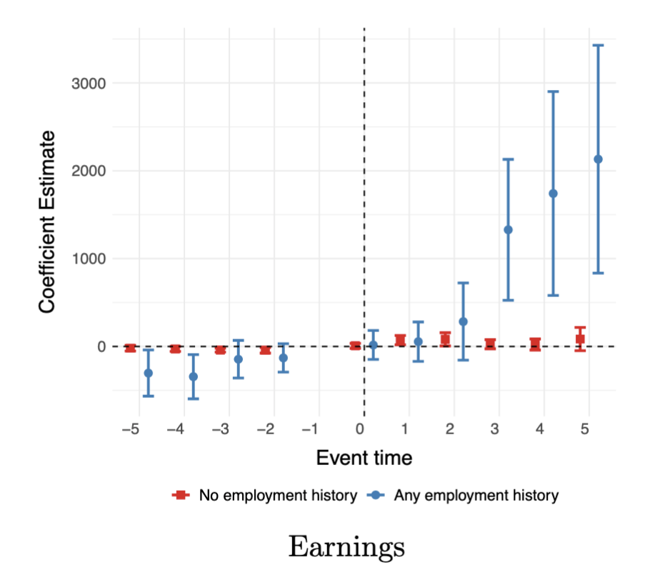
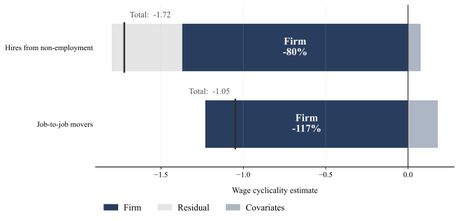

About Me
Hello! I am a Postdoctoral Researcher at the Economics Centre for Experimental Research on Fairness, Inequality and Rationality (FAIR) at the Norwegian School of Economics (NHH), specialising in applied microeconomics. My research encompasses topics in labour economics and public policy.
I completed my Ph.D. from the University of Zurich in 2024. During the 2024/25 academic year I visited the Department of Economics at The University of Melbourne. I hold an MSc in Economics from the University of Amsterdam and have worked at the OECD, De Nederlandsche Bank (the Dutch central bank) and the Australian Department of Jobs.
Working Papers
The Labour Market Effects of Insurance for Disability Supports: Evidence from the National Disability Insurance Scheme in Australia
Author: Garyn Tan
Status: Review and Resubmit at Labour Economics
Award: Best PhD Paper Award, Swiss Society of Health Economics Workshop 2025
Presented at: Berlin PhD Conference in Economics 2026; FAIR Day NHH 2026; OECD WiP Seminar 2025; SGGÖ 2025; Melbourne Institute Seminar 2025; UZH Empirical Micro Seminar 2025; National Disability Insurance Agency 2024
Abstract & figure
Most evidence on disability insurance focuses on income-replacement schemes that insure foregone earnings but depress labour market outcomes. Yet little is known about the economic effects of programmes that fund disability-related supports – aids and services which assist with daily living and expand functional capacity. This paper provides the first causal evidence on the labour market effects of large-scale funding for disability supports. Leveraging a staggered difference-in-differences design around the roll-out of Australia's National Disability Insurance Scheme (NDIS), I find that the reform increased participants' total annual earnings by 15.6% in the five years following exposure, while receipt of income-replacement benefits declined. The effects are highly heterogeneous: earnings gains are driven almost entirely by participants with prior labour force attachment, while those with no employment history remain unaffected. Using a novel administrative dataset on funding allocations and participant outcomes, I provide evidence that the NDIS increased economic participation mainly through indirect channels – by reducing capacity constraints and increasing autonomy – rather than through direct channels such as employment services or training supports. The results demonstrate that supports-focused disability policy can raise economic participation without incurring the labour trade-offs typical of income-replacement schemes.

Beyond the Zero Lower Bound: Negative Policy Rates and Bank Lending
Author: Garyn Tan
Published in: DNB Working Paper, De Nederlandsche Bank (2019)
Abstract
How do banks operate in a negative policy rate environment? Bank profitability is threatened by policy rate cuts in negative territory because the zero lower bound on retail deposit rates prevents banks from benefiting from cheaper deposit funding costs. Contrary to some earlier research, this paper finds that banks most affected by negative rates through this retail deposits channel increase their lending relative to less affected banks. The response is limited to mortgage lending, and is driven by banks with high household deposit ratios and banks with high overnight deposit ratios. Overall, net interest margins are unaffected, which implies that the volume effect is large enough to offset the adverse impact on bank profitability. However, the positive effect on lending dissipates as negative rates persist. This suggests that although the "reversal rate" has not been breached, it may creep up over time as banks become more limited in their options to maintain profit margins. The results also point to an important role for bank capitalisation—net interest margins of relatively highly capitalised banks are squeezed, whereas the net interest margins of less capitalised banks are unaffected. This can be explained by differences in capacity for shock absorbency.
Publications
Individual Inflation Forecasts and Monetary Policy Announcements
Authors: Jakob de Haan, Kostas Mavromatis, and Garyn Tan
Published in: Economics Letters (2020)
Abstract
Using a decomposition of US monetary policy shocks and inflation forecasts from Consensus Economics, we find that information and monetary policy shocks move inflation expectations in opposite directions. Better performing forecasters appear less reliant on the informational content of announcements.
Improving Uptake and Sustainability of Sanitation Interventions in Timor-Leste: A Case Study
Authors: Naomi Clarke, Clare Dyer, Salvador Amara, Susana Vaz Nery, and Garyn Tan
Published in: International Journal of Environmental Research and Public Health (2021)
Abstract
Open defecation (OD) is still a significant public health challenge worldwide. In Timor-Leste, where an estimated 20% of the population practiced OD in 2017, increasing access and use of improved sanitation facilities is a government priority. Community-led total sanitation (CLTS) has become a popular strategy to end OD since its inception in 2000, but evidence on the uptake of CLTS and related interventions and the long-term sustainability of OD-free (ODF) communities is limited. This study utilized a mixed-methods approach, encompassing quantitative monitoring and evaluation data from water, sanitation, and hygiene (WASH) agencies, and semi-structured interviews with staff working for these organizations and the government Department of Environmental Health, to examine sanitation interventions in Timor-Leste. Recommendations from WASH practitioners on how sanitation strategies can be optimized to ensure ODF sustainability are presented. Whilst uptake of interventions is generally good in Timor-Leste, lack of consistent monitoring and evaluation following intervention delivery may contribute to the observed slippage back to OD practices. Stakeholder views suggest that long-term support and monitoring after ODF certification are needed to sustain ODF communities.
Selected Works in Progress
Worker Reallocation and the Wage Cyclicality of New Hires
Authors: Josef Zweimüller, Andreas Mueller, Dominik Lukač and Garyn Tan
Status: In progress
Description & figure
This project studies the wage cyclicality of new hires using a long panel of linked employer–employee data from Austria. Using AKM decompositions, we show that the strong procyclicality of entry wages for job-to-job movers and hires from non-employment is primarily driven by cyclical worker reallocation across firms rather than wage flexibility. Once composition and selection effects are removed, the cyclicality of new hire wages is modest. We further link the micro-level wage regressions to aggregate reallocation dynamics, clarifying their connection to cleansing and sullying effects.

Youth Mental Health and Outcomes in Adulthood
Authors: Ida Lykke Kristiansen and Garyn Tan
Status: In progress
Slides available on request
Description
We study how experiences of mental health conditions in youth affect economic and health outcomes in early adulthood. Using administrative data on psychiatric diagnoses to identify children with depression, we examine how the approval of the first drug indicated to treat childhood depression altered outcomes as adults. We document a large earnings penalty of childhood depression, but find no significant evidence that greater access to antidepressants in childhood helped close the earnings gap. We do find significant effects on health: affected cohorts are less likely to be taking short-term treatments like benzodiazipines, have more overall interaction with the psychiatric healthcare system, and have fewer visits to the ER. We provide evidence that these effects are unlikely to be driven by compositional changes in socioeconomic status or depression severity of the childhood depression group.